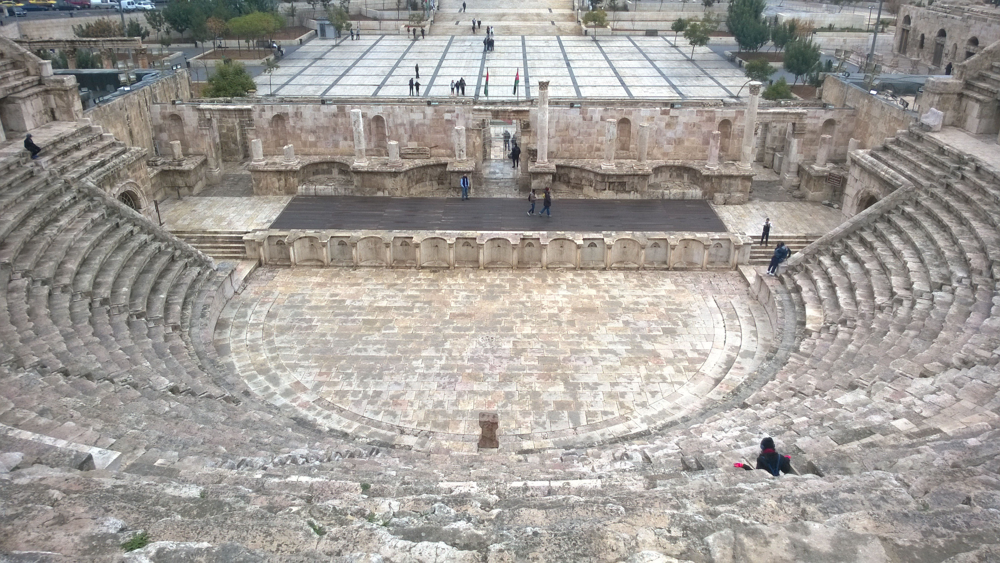
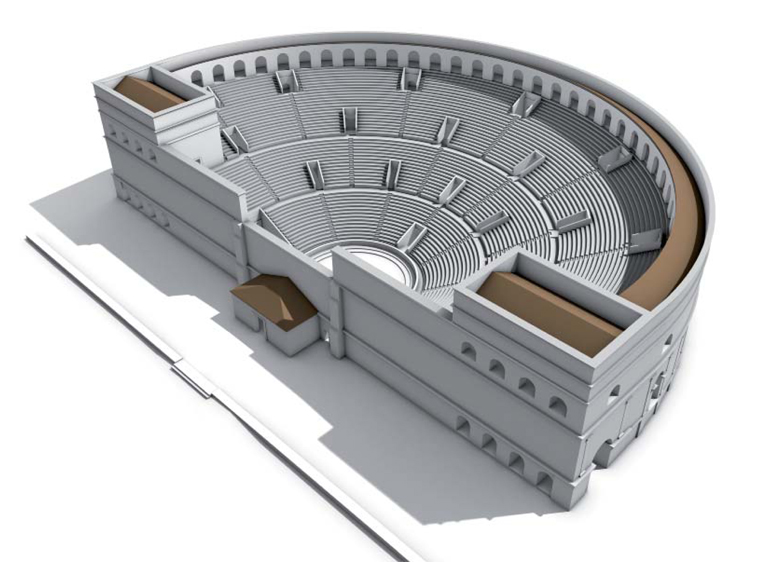
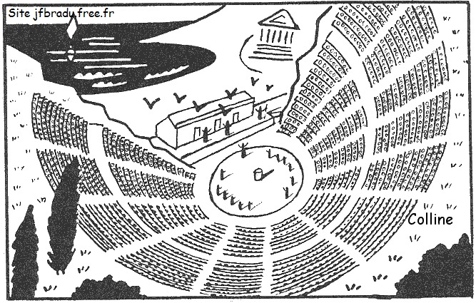

THÉÂTRE GREC OU ROMAIN ?

Ce théâtre est-il grec ou romain ?
C’est ici le magnifique théâtre grec d'Oropos, adossé à la colline, il possède un mur derrière la scène de taille réduite pour y crocher des décors simples.

Ce théâtre est-il grec ou romain ?
Ce théâtre construit à Merida en Espagne a une orchestra en demi-cercle et un mur de scène imposant, typique des théâtres romains.

Ce théâtre est-il grec ou romain ?
Ce théâtre à Amman en Jordanie est romain. L’orchestra est en demi-cercle, ce qui est typique des théâtres romains.

Ce théâtre est-il grec ou romain ?
Le théâtre d'Épidaure a une orchestra ronde typique des théâtre grecs.

Ce théâtre est-il grec ou romain ?
Ce théâtre, construit à Jerash en Jordanie est bien de style romain. L’orchestra est en demi-cercle et le mur de la scène est haut et important.
Les éléments distinctifs du théâtre romain : Il est entièrement maçonné de tous les côtés, l’orchestra est en demi-cercle et derrière les acteurs il y a un grand mur de scène qui leur permet d’accrocher les décors.
Les éléments distinctifs du théâtre grec : Il est adossé à une colline, l’orchestra est circulaire et derrière les acteurs il y a un bâtiment de scène qui laisse une vue sur le paysage.